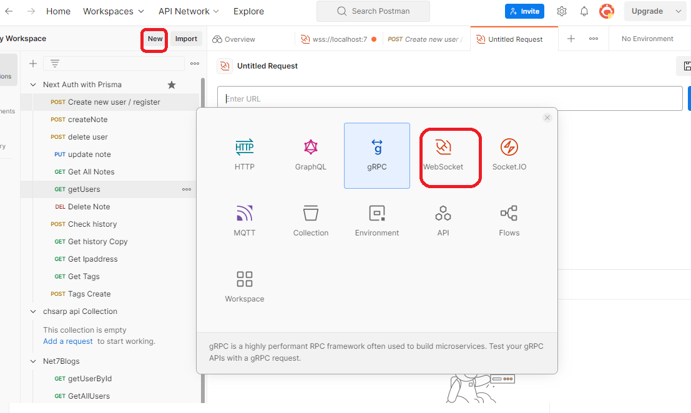

Test SignalR in Postman
-
I use Microsfot.AspNetCore.SignalR.Client 7.0.7 and .NET 7 to
implement a Real-time Chat App. I want to test the SignalR in
Postman. I found a good article
here. I followed the
steps and it worked as expected.
- Postman supports WebSocket protocol. You can use Postman to test WebSocket APIs.
- The below image show how to connect to a SignalR API using Postman. Click 'new' button, then select 'WebSock' in the pop-up window. 
-
This below message is telling SignalR server which message
format for the communication and every message needs to have a
0x1E/U+001E character at the end of the message which is
unseeable character and hard to type.
{"protocol":"json","version":1}If Connection is successful, you will get a response from server like this in the red box.:
In conclusion: The message sent from client to SignalR server should end with an unseeable special character.